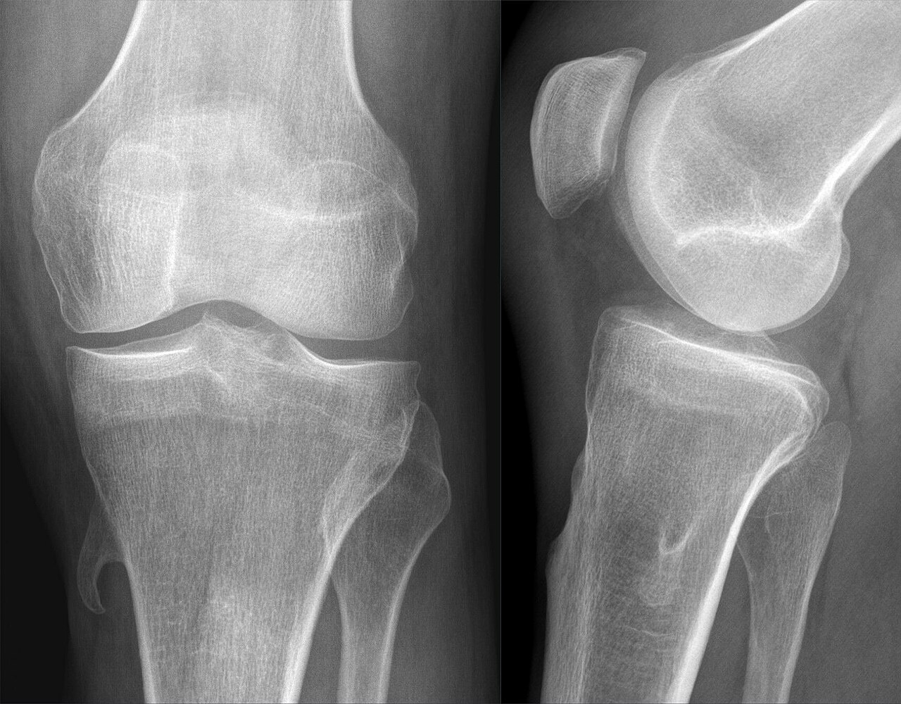

Ficha del catálogo
Osteocondroma (exostosis osteocartilaginosa)
- Sistema
- Óseo
- Modalidad
- RX
- Región
- Metáfisis de huesos largos
- Dificultad
- Básico
Es el tumor óseo benigno más frecuente y consiste en una excrecencia ósea recubierta por un casquete de cartílago que crece a partir de la metáfisis. Su rasgo definitorio es la continuidad de la cortical y de la médula ósea de la lesión con las del hueso de origen. Deja de crecer al cerrarse las fisis y suele descubrirse de forma casual.
Técnica
Radiografía en dos proyecciones que muestre la base de implantación de forma tangencial. La resonancia mide el grosor del casquete cartilaginoso cuando preocupa la transformación.
Qué observar
- Continuidad directa de la cortical de la lesión con la del hueso adyacente
- Continuidad de la médula ósea entre lesión y hueso, dato patognomónico
- Orientación de la lesión apuntando en dirección contraria a la articulación
- Base sésil o pediculada según su forma de implantación
- Casquete cartilaginoso fino, habitualmente de pocos milímetros en el adulto
- Signos de alarma: Crecimiento tras el cierre fisario o casquete grueso
Hallazgos
Excrecencia ósea metafisaria en continuidad medular y cortical con el hueso, orientada en sentido opuesto a la articulación vecina.
Perlas
El dato clave es la continuidad medular: Ninguna otra lesión la presenta. Un casquete cartilaginoso grueso en un adulto o el crecimiento después de cerradas las fisis obligan a descartar transformación a condrosarcoma.
Diagnóstico diferencial
- Condrosarcoma periférico
- Casquete cartilaginoso grueso, dolor y crecimiento en el adulto.
- Miositis osificante
- Osificación en partes blandas sin continuidad medular.
- Osteocondroma múltiple hereditario
- Lesiones múltiples con deformidad de los huesos afectados.
Simuladores
- Callo óseo maduro
- Osificación de inserción tendinosa
- Osteoma parostal
Por modalidad
- RX
- Suele bastar para el diagnóstico
- TC
- Confirma la continuidad medular en localizaciones complejas
- RM
- Mide el casquete cartilaginoso y valora compresión de estructuras vecinas
Protocolo
Dos proyecciones radiográficas ortogonales. Resonancia con secuencias sensibles al líquido si hay dolor, crecimiento o localización profunda.
Clasificación
Errores frecuentes
- No comprobar la continuidad medular y confundirlo con una osificación de partes blandas
- Ignorar el dolor de nueva aparición en un osteocondroma conocido
- No medir el casquete cartilaginoso cuando el paciente es adulto

osteocondroma exostosis tumor benigno continuidad medular casquete cartilaginoso metafisis